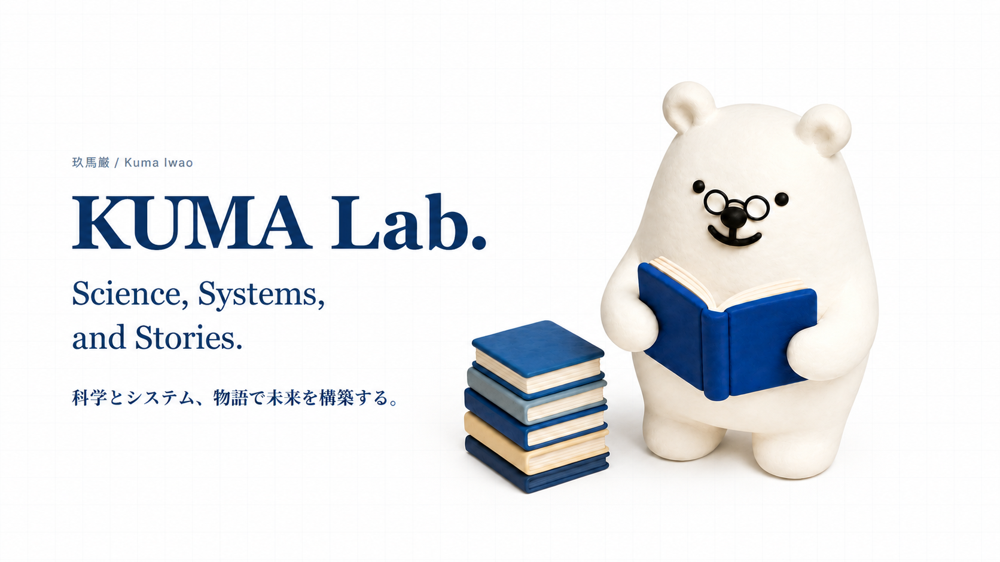

01
Science
サイエンスコミュニケーションや創作に関する学術活動（論文やワークショップ、イベント登壇）
View More →
サイエンスコミュニケーションや創作に関する学術活動（論文やワークショップ、イベント登壇）
View More →サイエンスや創作に関するデータベース、ツール、ゲームなどのデジタルアセット/コンテンツ開発活動
View More →小説、及び生成AIを利用した映像等のメディア作品制作活動
View More →玖馬巌 / Kuma Iwao
兼業SF作家。データ分析やDX関連のお仕事をしつつ、創作に関わる活動を通してサイエンスやテクノロジーと人間の可能性を探究しています。
1990年生まれ。第11回「星新一賞」一般部門優秀賞受賞。日本SF作家クラブ会員（2026年6月～）。